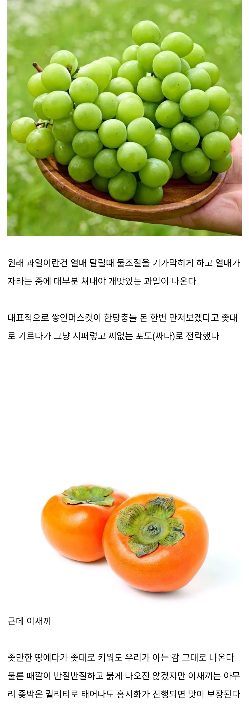

한국 과일 중 원탑 개씹튼튼 과일
댓글
엥 우리집 감나무는 거의 40년 되가는데 가지치기랑 수확만 격년으로 해주고 딱히 관리 안하는거같던데
오래된 애들은 그렇지. 묘목에서부터 키우면 힘들더라.
울엄빠는 다죽어가는 화분도 살리시는 분들이라.. 그런가 싶기도 하고
근데 정작 감을 좋아하는 사람이 가족중에 없음ㅋㅋㅋㅋㅋ
추위에 약한거 맞나? 고향집이 강원도 원주인데 안얼어죽고 매년 감 주렁주렁 달림

엥 우리집 감나무는 거의 40년 되가는데 가지치기랑 수확만 격년으로 해주고 딱히 관리 안하는거같던데
오래된 애들은 그렇지. 묘목에서부터 키우면 힘들더라.
울엄빠는 다죽어가는 화분도 살리시는 분들이라.. 그런가 싶기도 하고
근데 정작 감을 좋아하는 사람이 가족중에 없음ㅋㅋㅋㅋㅋ
추위에 약한거 맞나? 고향집이 강원도 원주인데 안얼어죽고 매년 감 주렁주렁 달림
감나무도 잘 키우려면 신경 많이 써야 함. 뿌리가 약하고 겨울 추위에 약해서 케어 안해주면 쉽게 죽음.
뿌리 약한 거는 고욤나무 뿌리에 접붙이면 해결되지만(아예 묘목 단계에서 접붙여서 팜), 추위는 덮어주고 감싸주고 애 키우듯 해야 돼. 시골 집에 감나무 심어 놓은 거 다 죽어서 고욤만 나오는 1인의 경험담이다.